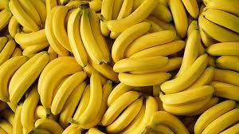

How to Make a Banana Pancake
Incentive
During April 2020, grocery shopping was an exciting part of life. Either you would risk your health going to stores to get food, or you had to deal with the mishaps of online shopping. Such was our experience when we ordered bananas last week.
We'd ordered 20 bananas. We ended up with 20 bunches of bananas.
Recipe
Ingredients
- 4 bananas
- 2 eggs
- 1 cup all-purpose flour
- 2 tbsp almond flour
- 1 tsp cinnamon powder
- 1/2 tsp salt
- 1 tsp sugar
- 1 tsp baking powder
- 1 cup milk
Other Utensils
- Large bowl
- Medium-sized bowl
- Ladle
- Pan
- Spoon
- Whisk

Steps
- Mix the dry ingredients (all-purpose flour, almond flour, cinnamon powder, salt, sugar, baking powder) in a large bowl.
The all-purpose flour should be added last.
- Slice and crush the bananas.
This can be done to whatever consistency you prefer.
- Whisk the wet ingredients (banans, eggs, milk) in a medium-sized bowl.
Have fun.
- Add the wet ingredients to the dry ingredients.
Make sure you don't spill anything.
- Using the ladle, spoon some batter onto the pan.
Spread the batter out so the pancake is cooked well, and so that it doesn't splatter when you flip it over. Speaking from experience.
- Enjoy the pancakes.
You will.
Tell me if you enjoyed the recipe!